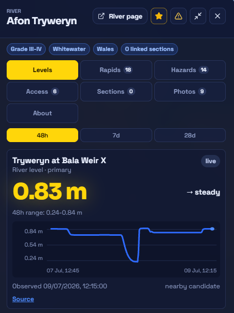
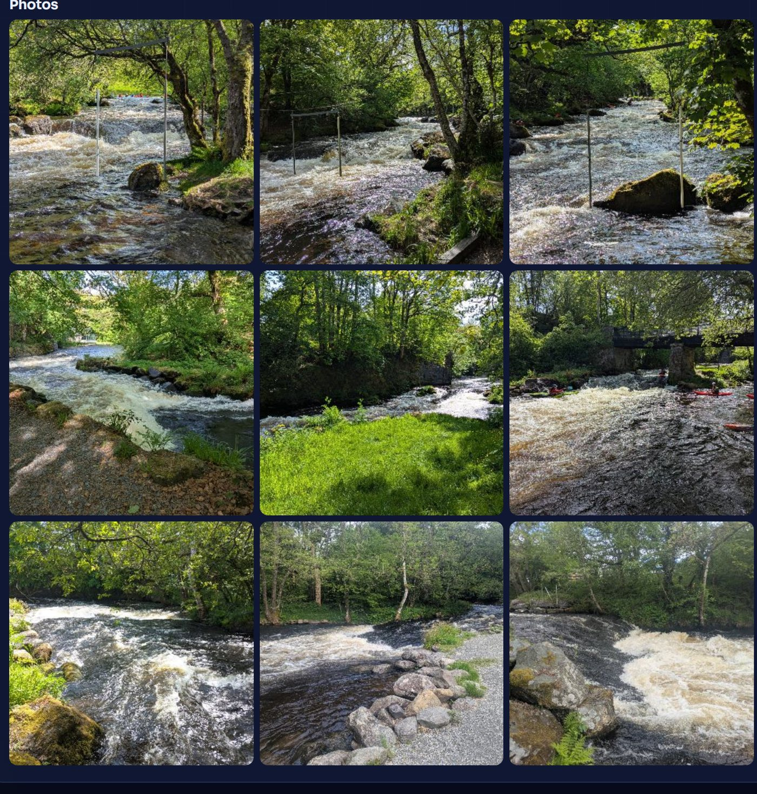

Hazards, with the detail that matters
Each hazard carries its type, severity, the date it was seen, evidence photos, and how many paddlers have confirmed it.
Community data
Every photo, hazard, and access note is tied to a place and a date — so you can see what's recent, confirm what's still true, and flag what's changed since you were last there.

How it stays fresh
What you can add
Each hazard carries its type, severity, the date it was seen, evidence photos, and how many paddlers have confirmed it.
Access notes cover the practical stuff and the sensitive stuff — parking, permissions, licences, and local access etiquette.
Every photo is attached to a river, access point, hazard, or report, so you know exactly what you're looking at.

Safety language matters to us. RiverLaunch shows recent reports, known hazards, last-confirmed dates, and how certain we are — and never tells you a river is safe, approved, or guaranteed to be passable. The decision is always yours, on the day.
Add what you find
Add a report, a photo, or a hazard from the bank — even with no signal, it syncs when you're back — and keep the information fresh for the next crew.
Contributions are moderated before they're shown as confirmed.